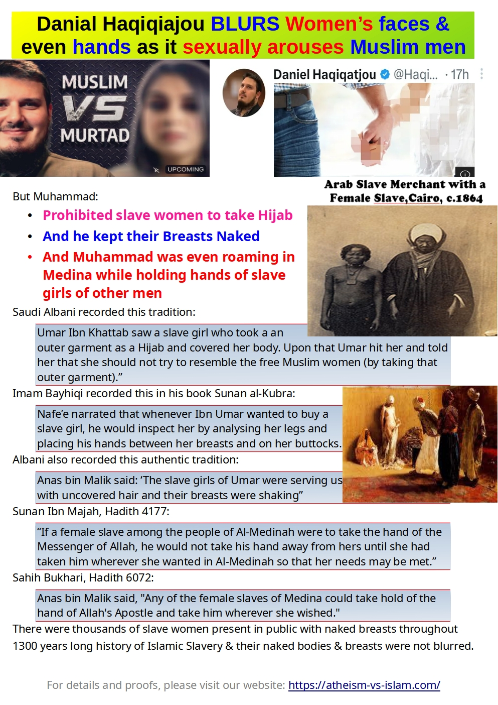

Here is the complete debate:
Table of Contents:
- (1) Daniel claimed that the evolution of human societies is linked to this practice, where they imposed Hijab on women
- (2) Daniel's argument: Spread of AIDS due to TEMPORARY Sexual Relationships in the non-Muslims countries
- (3) Daniel's argument of Mate-Guarding
- (4) Daniel's claim: Only men have responsibilities when it comes to Children
- (5) Depression is all-time high in Islamic countries like Pakistan
- (6) Daniel claims that rate of Divorce is higher in Western countries while women have got equal human rights
- (7) Hijab brings only Sexual Frustration in an Islamic society
- (8) If Muslim States don't let women go outside without Hijab, then the Western countries also don't let you go naked outside in public
- (9) Islamic preachers: But moving naked in public brings a lot of evils
- (10) Naturism in western countries is totally different from the Islamic forced nakedness of slave women and their rape:
- (11) The case of Hijab in the Islamic countries is totally Opposite
- (12) Muslim Youth in Islamic Societies has no chance to get rid of their Sexual Frustration
(1) Daniel claims that the evolution of human societies is linked to the practice where they imposed hijab on women
Response:
No. The evolution of human societies is not linked to this practice of hijab. There are thousands of tribes, which even exist today, where women and men are totally naked or women are topless. There are tons of videos on YouTube about them. For example, look at this Youtube Channel.
Daniel is making a mistake, whereas there were only a handful of societies that imposed hijab on women historically, and they did it only to differentiate between free women of noble families and slave women/prostitutes. They prohibited slave women and prostitutes from wearing hijab and from resembling free women from noble families.
https://en.wikipedia.org/wiki/Hijab#History
Elite women in ancient Mesopotamia and in the Byzantine, Greek, and Persian empires wore the veil as a sign of respectability and high status.[79] In ancient Mesopotamia, Assyria had explicit sumptuary laws detailing which women must veil and which women must not, depending upon the woman's class, rank, and occupation in society.[79] Female slaves and prostitutes were forbidden to veil and faced harsh penalties if they did so.[2]
Muhammad only followed those few societies in this discrimination; he banned slave women from wearing hijab. Umar ibn Al-Khattab used to beat slave women with a stick if they wore hijab and told them not to resemble free Muslim women by wearing hijab.
Muhammad's companions used to molest women who went out to relieve themselves in the evening for nature's call. Upon that, Muhammad ordered free Muslim women, in the name of revelation, to wear hijab so that they could be recognized as free women and not molested as slave women were molested.
Muhammad also kept the breasts of slave women naked in public. Yes, there were thousands of slave women present in front of Muhammad with naked breasts. They were sold in that same naked state in the Islamic Bazaars of Slavery
Please read the details here: Hijab has nothing to do with modesty, as Islam prohibited Slave Women from taking a Hijab or even covering their naked breasts in public 🔥ʰᵒᵗ
(2) Daniel claims that AIDS is spreading due to TEMPORARY Sexual Relationships in non-Muslim countries
Response:
But Islam also allowed TEMPORARY Sexual Relationships with dozens of slave women.
In Islam, a man is allowed to buy a slave woman (or capture a prisoner woman) and rape her legally. And when he fulfils his lust, then she can be handed over to his brother, or male slave. And when all brothers and slaves have raped her one by one in a Temporary sexual relationship, then she can be sold to 2nd master, who again rapes her and sells her to the 3rd master .... and thus the rape of poor slave woman continued in such a TEMPORARY sexual relationship.
Please read the details in our article: Crimes of Islamic Slavery against Humanity
Thus, the original Islamic Sharia could not have saved Muslims from HIV due to temporary sexual relationships with dozens of slave women. Muslims have been saved from HIV only when the Western world compelled them to abolish Slavery, which is permitted (Halal) in Sharia.
Moreover, instead of criminalizing natural behaviors between consenting adults and forbidding people from engaging in them, the solution to preventing illness transmission through sexual activity lies in finding treatments for such diseases and implementing measures to stop their propagation.
AIDS research has advanced considerably, leading to fewer HIV-related fatalities than those caused by conditions such as diabetes (link).
(3) Daniel's argument of Mate-Guarding
Daniel's claim that Mate-Guarding is a part of human evolution and even of apes is incorrect.
Bonobo apes, unlike other apes, do not practice mate-guarding. This behavior is influenced by their environment, where food is abundant and competition for mates is not as intense.
Furthermore, even among chimpanzees, females engage in relations with multiple males despite the concept of mate-guarding.
In human societies, there have been and still are several cultures where a woman can have multiple husbands, as seen in this link (link).
Moreover, look at the Inuit culture:
- The Canadian Encyclopedia: "Inuit: Social Organization" - This article states, "When a man left his home for an extended period, a neighbor or friend took care of his family, including his wife. Children born from such arrangements were considered equal members of the household."
- The University of Alaska Fairbanks' "Inuit Culture and Society" page - This resource notes, "Inuit families were often fluid and flexible, with children being raised by multiple caregivers. When a man had to leave his home for an extended period, a neighbor or friend would take care of his family, including his wife. Children born from these arrangements were considered full members of the household."
These examples show that mate-guarding is not a universal behavior among animals or humans, and various cultural practices and environmental factors influence mating patterns.
Moreover, in Islam:
- Swapping of slave women is also allowed (i.e. two masters can swap their slave girls, and rape them without their consent).
- A Muslim master can take the slave-wife of his male slave from him, and rape her. And after fulfilling his lust, he can return her to his male slave.
- And if a slave woman is shared between multiple masters, and they do sex with her one by one, then the child will have officially multiple fathers.
-
And it is the right of the owner either to accept the child from his slave women as his own or to deny the child his name. In this case, that child will be called a Bastard (Islamic Terminology is "Walad al-Haram ولد الحرام"), and the child becomes the slave of his own father.
Please read this detailed article for swapping, shared slave women and parentage of a child from a slave woman:
Crimes of Islamic Slavery Against Humanity
Islam has no problem with men having sex with 4 wives and dozens of slave girls (which he can rotate by selling older slave girls and buying new slave girls). Thus, Islam denies any mate-guarding in the case of men. It allows men to enjoy their lives. Islam didn't allow Muslim men to buy and rape new slave girls out of any NECESSITY, but it allowed them in order to fulfil their LUST.
What about the poor male slave who could not mate guard his wife, and the owner took his wife away from him and raped her? What kind of Islamic Mate Guauding is this?
And in mate guarding, the males didn't hand over their females to other males after "Temporary" sexual relationships. But Islam allows the owner to have a "temporary" sexual relationship with his slave girl, and after fulfilling his lust, he can hand her over to his brother or slave, or sell her to another master. Therefore, this trait of Islam is not even counted as mate guarding, but Islam is only guarding men and their lust.
But Islam only comes into play when it needs to place restrictions on women in the name of mate guarding. The sole excuse is that women should not be allowed to enjoy their lives while there is an issue of determining the paternity of the child.
However, the issue of paternity can be easily resolved with modern medical tests and DNA. Yet, Muslims still refuse to allow women to enjoy their lives and instead force them to wait for their husbands (even if they are preoccupied with other wives or slave girls, or if they are weak in sex and cannot satisfy them).
Older women or those who are already pregnant have no chance of becoming pregnant again. Nevertheless, Islam denies them any opportunity to enjoy their lives.
It would be acceptable if both partners agreed to be exclusive in their marriage or partnership. However, Islam has become one-sided, permitting men to have multiple sexual partners while imposing restrictions solely on women.
(4) Daniel's Argument: It is not a woman's RIGHT to decide on an abortion
Daniel's claim is based on the notion that only men bear financial responsibilities for children. Therefore, women should not have the authority to choose whether or not to terminate a pregnancy.
Response:
Firstly, the right to decide on abortion is not about a child, but about a fetus. The fetus has not yet been born, so there is no question of financial responsibility. Furthermore, only women have to endure the entire nine-month pregnancy, including the associated risks and discomforts. Consequently, the right to decide about abortion belongs exclusively to women.
Secondly, Daniel's perspective overlooks the practices in Western countries. In these societies, when a woman earns income, she also shares the financial responsibility for the child, just like the father does. If the woman earns more than the father, her financial contribution may exceed his. Moreover, custody decisions are based on the best interests of the child, regardless of the gender of the parent.
In essence, women have the same responsibilities concerning their children as fathers do. If a father takes care of the children, the mother is expected to provide financial support to him.
On the subject of pregnancy and delivery, only women have to endure the painful process, while husbands do not have a role in this biological aspect. Therefore, it is logical that women should have the right to make decisions regarding delivery or abortion.
Thirdly, even if we were to accept that Islam places the burden of financial responsibility squarely on the shoulders of fathers, this would only serve to highlight the inherent flaws in the system. Under Islamic law, a father remains financially liable for his children and wife, even if he becomes impoverished or severely disabled and unable to work. On the other hand, a wealthy wife is not obligated to contribute financially to her husband's needs or those of her children. This glaring disparity raises questions about the fairness and balance of the Islamic system. Why, then, do Islamic apologists boast about such an unjust arrangement?
Moreover, the Islamic system is further criticized for declaring the wife and children as the property of the man under the guise of the husband's financial responsibility. He can beat his wife, even with bruises (link), but the poor wife cannot take divorce on the basis of this brutal beating. And he can also beat children, and if he kills them, still he will not be physically punished for that, as children are considered his property in Islam. Unbelievable. Please read our article: A child is the father's property in Islamic Sharia, thus the father cannot be physically punished for killing his child
In conclusion, due to this unjust financial responsibility imposed solely on fathers, Islam seeks to deprive women of their right in making choices regarding delivery or abortion.
(5) Depression is all-time high in Islamic countries like Pakistan
Daniel's conclusion about Western people suffering more from depression than in Islamic countries is unsubstantiated.
The level of depression in Islamic countries, like Pakistan, is significant higher, as indicated in this research: https://www.ncbi.nlm.nih.gov/pmc/articles/PMC6728784/#:~:text=Depression%20is%20a%20debilitating%20mood,at%2047%25%20%5B8%5D.
Furthermore, the depression of women in Islamic countries is often underreported.
During the COVID-19 pandemic, people experienced depression even with simple restrictions like wearing a mask. In contrast, Muslim women are required to wear the whole Hijab (and even Niqab). It is natural that the Hijab and Niqab are a source of extreme depression for a lot of Muslim women.
Moreover, Muslim women are discouraged from leaving their homes, and face discomfort when venturing outside. Their freedom of movement is limited, causing them to experience distressing situations when they are outside.
Moreover, also think about the depression that slave women had to suffer due to Islam.
- Their masters could rape them against their consent.
- Their masters could hand them over to any of their brothers or male slaves to rape them.
- The master could break their family life, take the slave wife from his male slaves, and rape her.
- The masters could separate the slave mothers from their children, and sell them (or their babies) in the Bazaars of Islamic slavery after the child had got 2 teeth (at 6 months approximately).
- Muhammad allowed his followers to rape the captive minor and virgin girls the first night, although they had killed their fathers and brothers during the daytime. Just imagine the trauma those poor girls had to endure in that situation.
There is an extensive list of documented crimes committed by Islam against humanity concerning the treatment of slave girls. For more in-depth information, please refer to our detailed article titled: Crimes of Islamic Slavery against Humanity.
In addition to this, Daniel's claim regarding the higher suicide rate in Western countries as evidence of Western women being in depression is incorrect. Studies have shown that Western people tend to report higher levels of happiness compared to individuals in Islamic countries. However, in cases where individuals are suffering from severe illnesses and have lost interest in life, they may seek the right to Euthanasia (which some Muslims mistakenly label as suicide). Please read our article: Suicide: Why the rate of suicide is higher in the Atheist Community?
(6) Daniel claims that EQUAL human rights for women are the reason for the higher Divorce rate in Western countries
Daniel argues that equal human rights for women are behind the high divorce rates in Western nations. However, a closer examination of affluent Islamic countries like Kuwait, UAE, Qatar, and Saudi Arabia tells a different story. Despite women lacking equal rights in these societies, the divorce rate exceeds 50%, surpassing that of numerous non-Muslim Western countries.
It appears that wealth alone can drive up the divorce rate, regardless of gender equality. When women become financially independent, they refuse to tolerate exploitation. Meanwhile, the Islamic system perpetuates the subjugation of women, treating them as mere slaves. Perhaps Muslims should follow through on this logic and enslave their women entirely; that way, they could achieve a zero divorce rate while Islam gives absolutely no human rights to slave women.
Please read our article: Muslims blame the non-religious Western system for Destroying the FAMILY System.
(7) Hijab brings only Sexual Frustration in Islamic societies
Look at Pakistan:
- Pakistan is at the top in the search for INCEST Porn in the world (for the last 2 decades).
- 80% of child girls are raped by their fathers, brothers, cousins, uncles, and grandfathers. Their cases are not even registered in the police stations. Please read our article: Incest in Islamic Pakistan.2
- Pakistan is at the top in search of terms like "donkey rape" on Google.
- Thousands of children are being raped in Quran Schools.
- Women are molested by mobs. This thing never happens in Western countries. It may be individual men indulge in abuses against women, but never a mob of men molest a woman.
Muslim women are even molested during Hajj (link).
While western women at disco parties and beaches are safer from molestation than Muslim women during Hajj gatherings.
Please read our articles:
Islamic Hijab & Modesty leads only towards Sexual Frustration
(8) Apologist Argument: If Muslim states enforce the Hijab for women, then Western countries also impose restrictions on public nudity
The issue with Muslim preachers is their denial of the "Evolution of Dress," which is a factual phenomenon. The evolution of dress began as a response to weather conditions, as our ancestors migrated to colder or hotter regions. They needed clothing for protection against extreme temperatures, while modern humans lost their body hair, leaving them vulnerable to the elements.
Over time, the way people dressed became a symbol of status, with women from wealthy families covering themselves more, while women from poorer families or slaves often remained naked or partially clothed. This evolution eventually turned into a fashion trend. The lower class people, including slaves, often wore little to no clothing, and the upper class wore very luxurious clothing. Clothing norms evolved from there.
Clothing has an interesting history, but it wasn’t originally invented for “modesty” reasons. Actually, ancient people had no issue with clothing at all, and dress codes became established relatively recently on a human history timescale. It was these dress codes that led to the cultural aversion in some places of people being naked.
The question arises: Why do Muslim preachers solely use Western countries as their example? They should also consider indigenous tribes (link) that have practised Naturism (i.e. a lifestyle of practising non-sexual social nudity in private and in public) for thousands of years.
Although these tribes move naked in public without any dress, they still maintain a strong family system. These tribes don’t have rape and sexual assault as a big issue within them, and men and women see each other COMPLETELY NAKED. Compared to this, millions of Muslim women experience extreme molestation in Muslim countries despite wearing the Hijab. Even during the most religious Hajj gatherings, Muslim girls are exposed to extreme molestation.
Reason: Not showing men women's bodies is only going to make them fetishize the tiniest detail they do get to see. If women's bodies were treated normally, men would get used to them and not fetishize every tiny part of them. The same is true if you don't let men talk and interact with women. It will never allow them to understand women and their feelings and how to deal with them respectfully.
Please read all details in this article: The practice of Islamic Hijab and Modesty leads only to sexual frustration
Western countries, too, have experienced a gradual evolution of dress. Influenced by the Christian religion for centuries, many Westerners still adhere to conservative dress codes. However, there is a growing movement of naturists in these countries, leading to the establishment of hundreds of nude beaches where nudity is completely normalized.
In Denmark, nudism is permitted along 4,500 kilometres of coastline (where kids are also present along with families), and the same applies to other Scandinavian countries (source: https://www.dailyscandinavian.com/naturists-in-scandinavia/). While private offices and government institutions may have specific dress codes, in your personal life, you are even free to wear a bikini in public places. Despite the presence of bikinis in public or even total nudity on beaches, women in Western countries are not subjected to molestation and generally enjoy a safer environment compared to Muslim women, who unfortunately face instances of molestation even during Hajj gatherings.
Moreover, there is technically no law about nudity in Denmark. There is a relevant law, though, which reads:
It is forbidden to display obscene or offensive behavior, that is likely to offend others or to outrage bystanders.
Here’s the Danish text:
Det er forbudt at udvise uanstændig eller anstødelig opførsel, der er egnet til at forulempe andre eller vække offentlig forargelse.
The relevant word is “likely”. This makes the application of the law highly situational. Except for religious people in Denmark, other people will probably soon stop getting offended even if others move totally nude in public. It is just like indigenous tribes move naked and it is totally NORMAL for them.
Here is an introduction to the history of Nudity:
https://en.wikipedia.org/wiki/History_of_nudity
The history of nudity involves social attitudes to nakedness of the human body in different cultures in history. The use of clothing to cover the body is one of the changes that mark the end of the Neolithic, and the beginning of civilizations. Nudity (or near-complete nudity) has traditionally been the social norm for both men and women in hunter-gatherer cultures in warm climates, and it is still common among many indigenous peoples. The need to cover the body is associated with human migration out of the tropics into climates where clothes were needed as protection from sun, heat, and dust in the Middle East; or from cold and rain in Europe and Asia. The first use of animal skins and cloth may have been as adornment, along with body modification, body painting, and jewelry, invented first for other purposes, such as magic, decoration, cult, or prestige. The skills used in their making were later found to be practical as well.
In modern societies, complete nudity in public became increasingly rare as nakedness became associated with lower status, but the mild Mediterranean climate allowed for a minimum of clothing, and in a number of ancient cultures, the athletic and/or cultist nudity of men and boys was a natural concept. In ancient Greece, nudity became associated with the perfection of the gods. In ancient Rome, complete nudity could be a public disgrace, though it could be seen at the public baths or in erotic art. In the Western world, with the spread of Christianity, any positive associations with nudity were replaced with concepts of sin and shame. Although rediscovery of Greek ideals in the Renaissance restored the nude to symbolic meaning in art, by the Victorian era, public nakedness was considered obscene. In Asia, public nudity has been viewed as a violation of social propriety rather than sin; embarrassing rather than shameful. However, in Japan, mixed-gender communal bathing was quite normal and commonplace until the Meiji Restoration.
While the upper classes had turned clothing into fashion, those who could not afford otherwise continued to swim or bathe openly in natural bodies of water or frequent communal baths through the 19th century. Acceptance of public nudity re-emerged in the late 19th and early 20th centuries. Philosophically based movements, particularly in Germany, opposed the rise of industrialization. Freikörperkultur (Free Body Culture) represented a return to nature and the elimination of shame. In the 1960s naturism moved from being a small subculture to part of a general rejection of restrictions on the body. Women reasserted the right to uncover their breasts in public, which had been the norm until the 17th century. The trend continued in much of Europe, with the establishment of many clothing-optional areas in parks and on beaches.
Through all of the historical changes in the developed countries, cultures in the tropical climates of sub-Saharan Africa and the Amazon rainforest have continued with their traditional practices, being partially or completely nude during everyday activities.
(9) Islam itself Practiced NUDITY (and the worst form of it while it was a FORCED Nudity)
Islamic Preachers totally forget these realities:
- It was Islam who made slave women move in public topless. There were thousands of slave women present in front of Muhammad and in public with naked breasts.
- Umar Ibn Khattab used to beat them with a stick for taking Hijab and told them not to resemble free Muslim women by taking the Hijab.
- It is 1300 year long history of Islam where slave women had to stay topless.
- And Islam turned poor slave women into sexual objects too, and Muslim men were given licences to fulfil their sexual lusts by raping them. They were presented in that naked state in the Islamic Bazaars of Slavery, where Muslim customers were also allowed to touch their private parts (just like sheep and cattle are groped before purchase).
- And Muslim men were molesting slave women, without any fear of physical punishment, while Allah (i.e. Muhammad) didn't punish or even rebuked them for molesting slave women. Muslim men were raping slave girls in Temporary Sexual Relationships, and selling them, in order to buy new slave girls to rape them too. They were even buying small non-adult girls from slave markets to use them as sexual objects. They were swapping their slave girls and raping them. In short, Islamic Sharia turned Muslim men into serial rapists legally by giving them full control over the poor slave girls.
Please see all proofs in these two articles:
- Islam Prohibited Slave Women from Taking Hijab or Even Covering Their Naked Breasts in Public
- Crimes of Islamic Slavery against Humanity
(10) Naturism in Western countries is totally different from the Islamic forced nakedness of slave women and their rape:
Naturism is not about sex, but it is based upon respect for humans and their choices.
No one can force a woman to become topless or nude. And forget about rape, no one is allowed to even touch a woman without her consent.
Naturism is associated with absolutely no evil.
Islamic preachers who blame Naturism for the rise in divorce rates in Western countries are mistaken. Indigenous tribes have practiced Naturism for centuries and still maintain strong family systems and successful marriages.
The actual reasons behind the increasing divorce rates in Western countries differ. Advancements in technology and societal structures have made life more manageable for people, reducing their reliance on family support. This convenience has contributed to the higher divorce rates. If challenging times were to resurface and people once again required family support for survival, the family system would naturally strengthen once more.
This is evident in Gulf Muslim countries where the divorce rate has reached 50%, even surpassing some Western countries. Despite practicing no Naturism and adhering to full Hijab, the high divorce rate is attributed to the fact that people in these affluent Gulf countries do not necessarily rely on strong family systems to sustain themselves.
The tribal system, much like the family system, was robust in the past when people depended on their tribes for survival. However, in modern times, especially in cities, the tribal system has diminished as a society no longer requires tribal support to survive.
(11) The case of Hijab in the Islamic countries is totally Opposite
The Naturist Movement in Western countries is not compelling Muslim women to become topless, but it is liberating all humans. It is about human rights and respecting one's choice for his/her dressing. Modesty and decency are not hidden in the Hijab, but modesty and decency are to RESPECT the women and their choices. The Western world is the most decent, as it educates men to RESPECT women and their choices.
But the issue of the Hijab in Islamic countries is totally opposite.
The Islamic Hijab is plagued by several evils:
The first evil is the blatant discrimination and humiliation it inflicts on millions of slave women. Islamic Sharia historically prohibited slave women from wearing the Hijab, reserving it only for free Muslim women as a symbol of respect and honor. Muslim women today should not view the Hijab as a personal choice but should stand with us in protesting against this extreme injustice faced by millions of slave women.
The second evil of the Islamic Hijab is:
- The Hijab is practically IMPOSED by force upon the private lives of millions of women.
- It is a TOOL in the hands of men, in order to take away their liberties and make them dependent upon men so that men can exploit them.
- The Hijab is used in order to usurp the basic human rights of women.
Moreover, the Hijab's demands of women extend to limiting their movement within the confines of their homes, forbidding unnecessary interactions with men. This gender segregation breeds further problems, leading men to fetishize even the smallest glimpses of women's bodies due to the lack of normal exposure. The restrictions imposed by the Hijab and Islamic modesty contribute to sexual frustration among Muslim men and hinder natural interactions between men and women, preventing understanding and respectful treatment. Please read: Islamic Hijab & Modesty حياء leads only towards Sexual Frustration.
Love, a natural emotion, is stifled by the Hijab and Islamic decency (حياء). Islam disapproves of love stories like Layla and Majnun (comparable to Romeo and Juliet) and severely punishes individuals involved in love. Islam employs the Hijab and Islamic decency (حياء) to suppress and control this natural emotion, reflecting an approach contrary to embracing nature.
In Islamic practice, girls are practically coerced into marrying men they have never interacted with or know little about their mentality and personality. This not only makes the Hijab and Islamic decency (حياء) oppressive but also qualifies as crimes against humanity.
The imposition of the Hijab transforms women's lives into a constant struggle, subjecting them to numerous hardships daily. To witness the actual ramifications of these evils, please read our article: Negative role of 'Hijab' and 'Islamic Modesty' in the incident of Ifk (Highly recommended)
(12) Muslim Youth in Islamic Societies have no chance to get rid of their Sexual Frustration
In earlier centuries, Muslim men had opportunities to interact with the opposite sex, while:
- There were thousands of slave women present in public (and even their breasts were naked).
- Muslim men also raping the slave women.
- And even Muhammad was moving in public while holding the hands of slave girls of other men (Sahih Bukhari, Hadith 6072 & Sunan Ibn Majah, Hadith 4177)
In modern times, the existence of slave women, thanks to the influence of the Western world, is no longer prevalent.
Today, Muslim boys face challenges in getting married until they reach around 30 years of age. They often prioritize obtaining an education, securing a stable job, and saving a significant amount of money for dowry, also known as Haq Mehr.
These unnatural restrictions imposed by Islam on the interaction between the opposite sexes inevitably result in extreme sexual frustration among Muslim youth.
An incident from the time of Muhammad, the Sahaba (companions), highlights the struggle of controlling their desires. Initially, Muhammad/Allah forbade them from having sexual relations with their wives during the nights of Ramadan. However, unable to cope, the Sahaba secretly visited their wives during Ramadan nights. Eventually, Muhammad/Allah had to revoke this order and permit the Sahaba to engage in sexual activity during Ramadan nights. This incident is documented in the Quran.
Surah Al-Baqarah (2:187)
“It is (now) made lawful for you to have sexual relations with your wives on the night of As-Siyam (fasting) ... Allah knows that you used to deceive yourselves (by going to wives secretly), so He turned to you and forgave you (for this sin). So now you are allowed to have sexual relations with your wives.
Narrated Al-Bara': When the order of compulsory fasting of Ramadan was revealed, the people did not have sexual relations with their wives for the whole month of Ramadan, but some men cheated themselves (by violating that restriction). So Allah revealed: "Allah is aware that you were deceiving yourselves but He accepted your repentance and forgave you..".
The inability of Sahaba to control their sexual desires for 30 nights during Ramadan raises questions about how Muslim youth today can possibly suppress their desires for an extended period of 30 years.
Muslim preachers suggest fasting as a means to control sexual desires, but it's evident that even Sahaba, who were also fasting during Ramadan, struggled with their desires for those 30 nights.
Another Muslim argument is to marry boys and girls at the age of 12. However, this is not practical, as even Muhammad himself did not marry until the age of 25. Many fathers do not wish for their daughters to marry someone who is not financially stable. No father wants his daughter to face hunger. No father wants her daughter to become a baby-producing machine at the age of 12.
These realities lead to extreme sexual frustration in Islamic societies, with no apparent solution to escape this issue. The problem persists and poses significant challenges to Muslim youth.
Danial blurring the faces of women and even their hands, as it sexually arouses Muslim men

Another image.


 Hassan Radwan
Hassan Radwan
{kind=link}